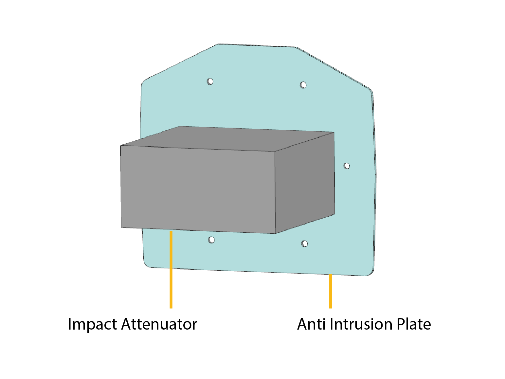

Chalmers Formula Student – Chassis & Ergonomics Freja 2024 · EV & Driverless
Multidisciplinary motorsport project designing, manufacturing, and racing
a Formula-style electric and autonomous race car. I focused on the
carbon fiber monocoque, safety structures,
and integration with EV and DV subsystems.
Composite Chassis
Crash & Safety Structures
EV & Driverless Integration
Freja 2024 – Formula Student EV & Driverless race car.Team Picture of CFS24.Carbon fiber monocoque and safety structure details.
❮
❯
Project Overview
Chalmers Formula Student (CFS) is a multidisciplinary motorsport
engineering project where students design, manufacture, and race a
Formula-style electric and autonomous race car.
In 2024, the team developed Freja, designed and built
~97% in-house by a team of 70+ students from 11 nationalities,
supported by 50+ industrial partners.
Freja competed in both Driverless (DV) and
Electric Vehicle (EV) classes at
Formula Student East (Hungary) and
Formula Student Germany (Hockenheim), one of the most competitive
student motorsport environments in the world.
Problem Statement
The core challenge was to design a lightweight yet structurally safecarbon fiber monocoque that complies with the Formula Student rulebook
while enabling integration of both manual driving and
autonomous systems.
The chassis had to satisfy demanding stiffness,
crash safety, and manufacturability
requirements, and at the same time coordinate packaging and load paths with
Aerodynamics, Suspension, Electrical,
and Driverless subgroups.
My Role & Responsibilities
Designed and validated safety-critical components such as
roll hoops, frontal crash structure, and
LiDAR mount, ensuring regulation compliance and integration within the monocoque.
Fabricated the carbon fiber sandwich composite monocoque, and
supported its Structural Equivalency Spreadsheet (SES) and
Impact Attenuator Dataform (IAD) submissions.
Assisted in vehicle testing:
Composite panel tests on UTM.
Crash testing of the impact attenuator.
Torsional stiffness testing of the monocoque.
Rain testing for sealing verification.
Dynamic and autonomous system tests for performance validation.
Served in the Vehicle Crew during competitions:
car setup, inspection, and event readiness (wheels/tires, battery installation,
diffuser fitting, transporting the car between dynamic events).
Collaborated closely with cross-functional subgroups to align
design, analysis, and manufacturing with tight project timelines.
Approach
Represented the Chassis & Safety Structures subgroup
in weekly design reviews, leading manufacturing planning and troubleshooting
integration challenges.
Used a simulation-driven design methodology:
combining CAD, FEA, and physical prototyping to refine stiffness,
manufacturability, and crash performance.
Standardized design workflows to improve traceability,
documentation quality, and communication across subteams.
Worked hands-on during manufacturing to ensure
tooling accuracy, layup precision, and final fitment of
structural components (bulkheads, roll hoop interfaces, IA mounts, sensor brackets).
Subprojects
Focused design and validation work within the
Chassis & Safety scope for Freja (2024).
1
Roll Hoops (Main & Front Hoops)
Roll-over protection structure providing a compliant safety envelope for the driver and internal components.
Designed the main hoop using Docol R8 racing-grade steel with a circular profile,
mounted via bolted inserts, brackets, and triangulated bracings for stiffness and durability.
Engineered a square-profile aluminum front hoop for large bonding area and weight reduction.
Used MATLAB for dimension and weight optimization, balancing stiffness and manufacturability.
Verified clearance with dashboard, steering, suspension, aero, TSAL, and shutdown systems.
Siemens NXANSYSMATLABExcel / SES
More information
Achieved a regulation-compliant roll hoop assembly with improved manufacturing precision and reduced
complexity via laser-cut tubing profiles and better jig alignment. All data was
documented and validated in the SES, ensuring full FS rule compliance without
compromising ergonomics, visibility, or safety.
2
Frontal Crash Structure
Crash absorption system protecting the driver’s legs in frontal impact scenarios.
Developed an Impact Attenuator (IA) bonded to an
Anti-Intrusion Plate (AIP), bolted to the front bulkhead.
Designed an aluminum AIP matching bulkhead geometry and used
Plascore aluminum honeycomb as IA core for high specific energy absorption.
Updated adhesive and bonding methods with higher shear-strength glue for reliability and compliance.
Prepared the final Impact Attenuator Dataform (IAD) with revised shear/buckling
calculations and front wing mount effects.
Siemens NXExcelWordIAD

More information
The crash structure was designed to satisfy Formula Student requirements of absorbing
120 kN with no more than 25 mm deformation at the AIP.
The validated solution improved bonding reliability and simplified assembly for competition use.
3
LiDAR Mount (Driverless Class)
Rigid, vibration-resistant LiDAR mounting for reliable autonomous perception.
Designed an aluminum mounting plate fastened to steel tabs welded to the main hoop,
ensuring stiffness and ease of fabrication.
Performed static structural analysis in ANSYS under a 4g bump scenario to evaluate
deflection and stress levels.
Ensured accessibility for calibration, maintenance, and wiring during competition.
Optimized geometry for water-cut fabrication and standardized attachment design.
Siemens NXANSYSMATLAB
More information
The mount delivered a stiff, lightweight, and easy-to-assemble solution with negligible deformation under
operational loads, maintaining LiDAR alignment and supporting reliable autonomous navigation throughout events.
4
Carbon Fiber Monocoque
CFRP sandwich monocoque providing high stiffness-to-weight ratio and SES-compliant safety.
Contributed to CAD of key chassis components in Siemens NX and
CATIA V5, aligned with aero and suspension packaging.
Supported composite layup validation by preparing and analysing
three-point bending test panels for SES equivalency.
Manufactured CF covers and a Kevlar HVD firewall, and helped maintain
interface alignment with wings, firewall, battery housing, LV assembly, and suspension mounts.
CATIA V5Siemens NXANSYS Mechanical / ACPTeamcenterExcel / SES
More information
Work contributed to the successful design, fabrication, and validation of the Freja 2024 monocoque.
All layups were correlated with SES requirements through testing and simulation, resulting in a
lightweight, regulation-approved chassis and deeper practical understanding of composite processing
and cross-functional integration in a large motorsport project.
Key Results & Outcomes
Delivered a lightweight, rule-compliant monocoque and safety system
that enabled competitive EV and DV operation.
Strengthened design validation through improved
IAD and SES documentation,
ensuring inspection readiness and compliance.
🏆
FS East · ZalaZONE, Hungary
1st Place – Dynamic Events (Driverless) 3rd Overall – Driverless Cup
Across a highly competitive European grid of driverless teams.
🥈
FS Germany · Hockenheim
2nd Overall – Driverless Cup
Among 80+ international teams in one of the
most competitive FS competitions globally.